Features
OSD Setup
WTRTI (Built-in)
This type of OSD is enabled by default, if it is not, you can enable it at:
Settings -> OSD -> OSD Type -> WTRTI
Start the game. In the graphics settings, switch to Fullscreen window mode.
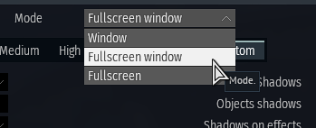
That's it. Go to the "Test Flight" for testing.
Tip
To change the font, see Changing the fonts.
Warning
Make sure that "Hardware Accelerated GPU Scheduling" (HAGS) is disabled. Otherwise, it can lead to stuttering when alt-tab to the game.
How-to
Note: If HAGS is disabled, the DLSS Framegen may not work.
Tooltips
Most controls have tooltips. Simply hover over them and a tooltip will appear. 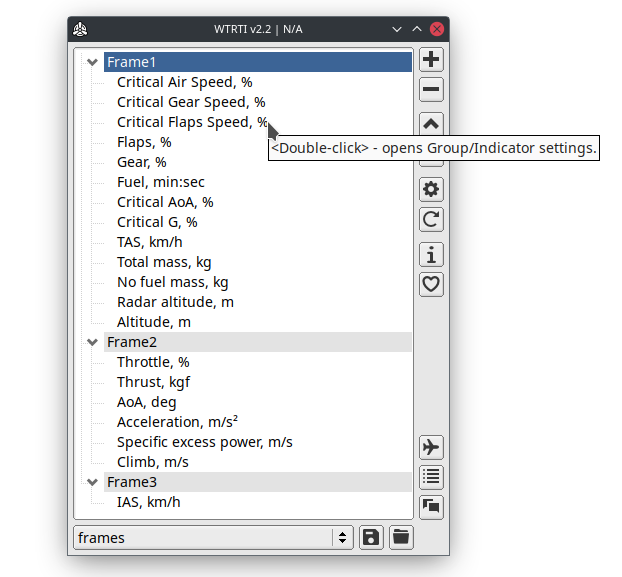
Profiles
Profiles are located in the Profiles folder.
A profile may contain: Groups, Colors, Indicators and VR options (optional).
If you have downloaded a profile (.cfg file), place it in this folder and restart the application.
You can then select it from the combo box below.
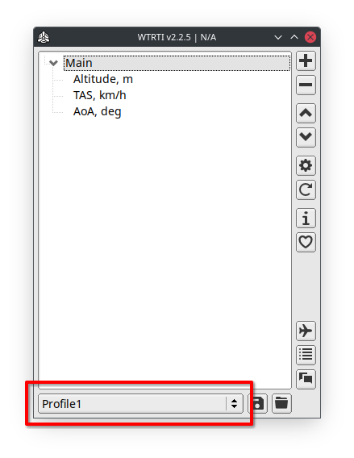
If you want to create a new profile, click the Reset button (circle arrow) in the main window.
Vehicle Profiles
The type of profiles that are saved with a vehicle name, e.g. bf-109f-4, mig_29_9_13, spitfire_mk1.
To save a vehicle profile, go to Test Flight then ALT-TAB to the main window, and click on the Save button (floppy disk at the bottom).
Auto-loading profiles
This feature allows you to automatically load profiles when you start a battle or change vehicles.
You can enable it at: Settings -> General tab -> Auto-load profiles
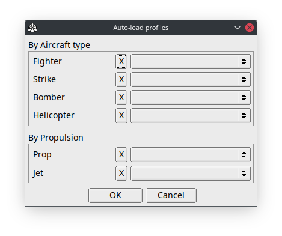
Profiles have loading priorities:
1. Vehicle Profiles.
2. By a Type: Fighter, Strike, etc.
3. By a Propulsion: Prop, Jet.
This means that if you have a vehicle profile, it will be loaded first, ignoring other types.
Hotkeys
Settings -> Hotkeys tab
Note: Hotkeys only work during a session.
You can use hotkeys to control OSD visibility, activate Benchmark Mode, or load profiles during a battle.
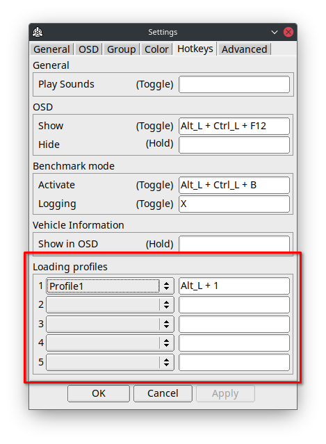
Tip
To rebind the key, click on the input field, press 'Delete', then press the desired key or 'Esc' to leave it empty.
Groups
With groups, you can control how the indicators are displayed, their position and layout.
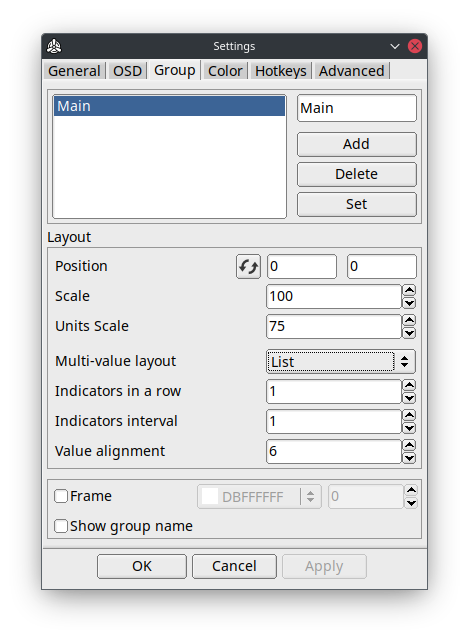
Tip
To quickly access this settings, double-click on a group (e.g. "Main") in the main window.
You can also move a group using keyboard.
Select a group in the main window, ALT-TAB to the game and press:
SHIFT + ALT + ARROWS
Setting up Multiple Groups
This feature allows you to configure multiple groups at the same time.
Select multiple groups from the Groups list, make changes, and click Apply.
Only the changed settings will be applied to other groups.
You can also move multiple groups at once.
If you change the position of the leading group (the last one selected), the leading group's offset (new - old pos) will be applied to the others.
Multi-value layout
This option allows you to change the layout of neighboring multi-value indicators.
- List: ENGN1, ENGN2, ENGN3, RPM1, RPM2, RMP3, etc
- Shuffle: ENGN1, RPM1, ENGN2, RPM2, ENGN3, RPM3, etc
Colors and Color Schemes
WTRTI works with color slots.
You can Add, Delete and Set a color slots (maximum 32).
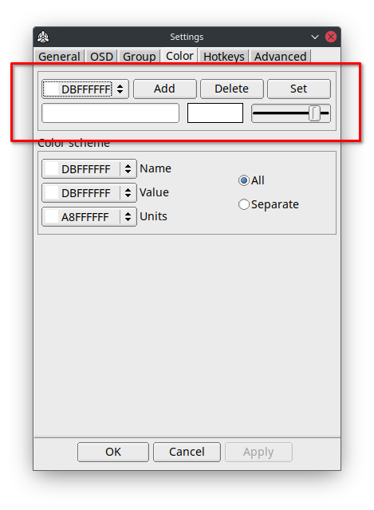
By default, all indicators have the same color scheme (All).
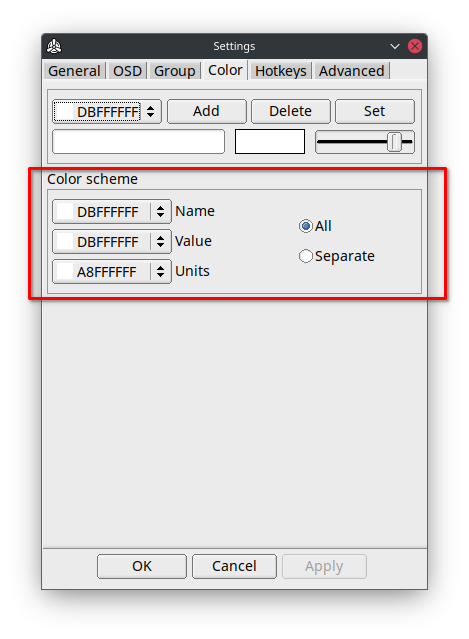
You can change the color for every part of an indicator: Name, Value, Units.
If you want to set up colors for a specific indicator, enable the Separate Color scheme, then you can change the colors in the indicators settings.
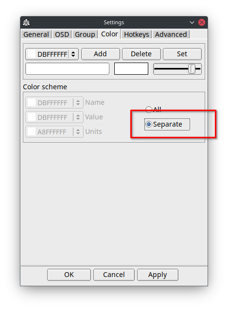
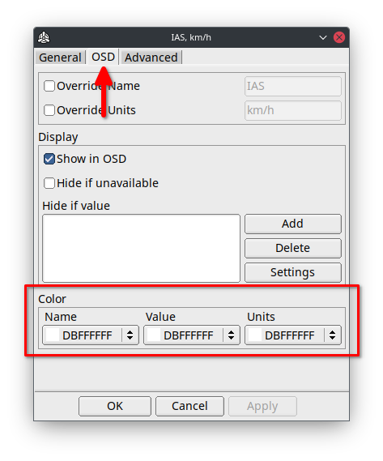
Indicators
Double-click on the indicator in the main window to open the indicator settings window.
General
Alert
Alerts, allows you to specify a range of values within which you will be alerted visually (color change) or sound playback when the value exceeds the threshold.
For example, you need an alarm when you are at low altitude.
Open the "Altitude, m" settings.
Add a new alert condition by clicking the Add button in the Alert section.
Then double-click on the new element.
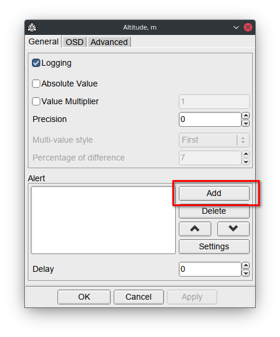
Specify the threshold value (e.g 200 meters)
Note: Using < sign means that this condition will only be triggered for values below 200.
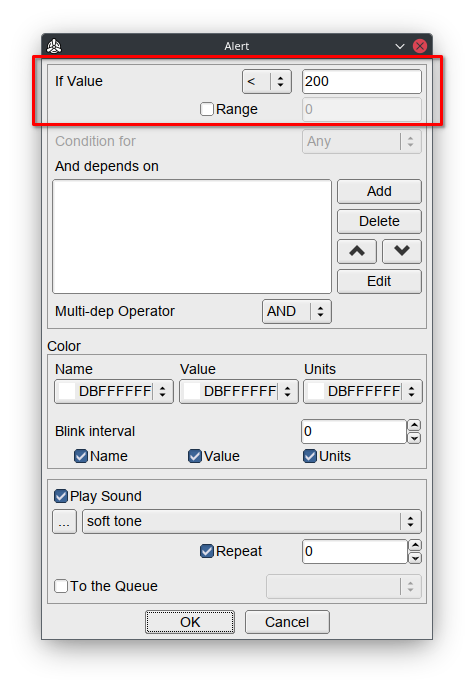
Choose a color and sound.
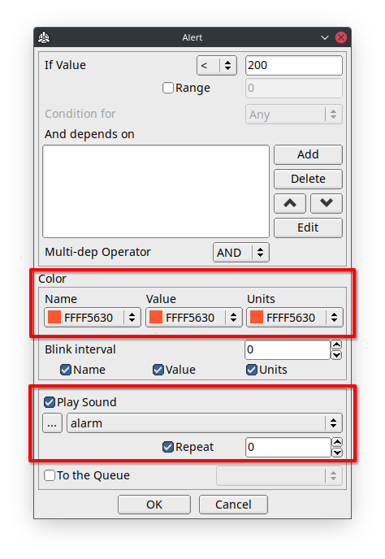
Click on the OK button.
This is it. Go to Test Flight for testing!
Note
Multiple conditions are checked from top to bottom.
Only the last matched condition will be triggered.
Tip
"min:sec" indicators are set in seconds.
Tip
For sound alerts, it's recommended that you use a 'relative paths' for audio files by selecting them from the WTRTI root directory, e.g. Sounds folder.
This makes the profile more portable, so you can share it with others.
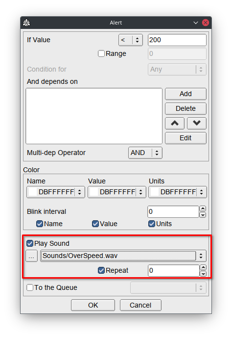
Advanced
In "State" list
This option allows you to place the final value of the indicator, after all postprocessing, into the "State" list (press F2 in the main window).
Enable the option and specify the key that will be in this list.
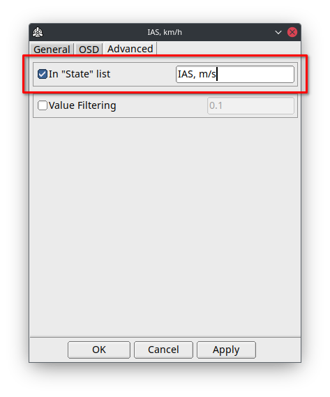
All In-State indicators are calculated in a separate order, from top to bottom, before Non-In-State indicators.
The indicator with an in-state key that depends on another in-state indicator (chained), must be placed below that indicator in the main list, otherwise it will be N/A.
Logging the data to a CSV file
- Go to Test Flight.
- Activate Benchmark mode with CTRL + ALT + B (by default).
- To start logging press X key.
- Press again X to stop.
All these hotkeys you can rebind in the Settings -> Hotkeys tab.
You can change the logging interval in milliseconds, at
Settings -> General tab -> Benchmark mode -> Logging Interval
Generated .CSV files are located in the Logs folder.
When importing to Excel, select "Comma" as Delimiter(Separator).
In the OSD, the benchmark information is positioned in the last group, so if you want to place it in a specific location, create an empty group and move it as you wish.
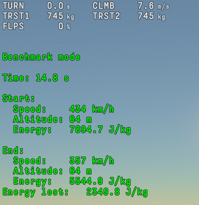 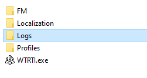
You can toggle Logging for a specific indicator in the Indicator's Settings, by default it's enabled.
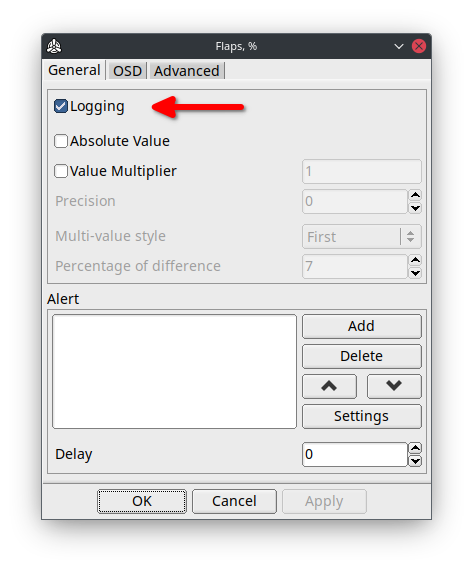
Game Chat
Game chat - allows you to see, copy or translate messages of the in-game chat.
You can enable the auto-logging feature, Game Chat -> Settings -> Logging, this will automatically write into a log file for every game session.
Log files are located in the Logs folder.
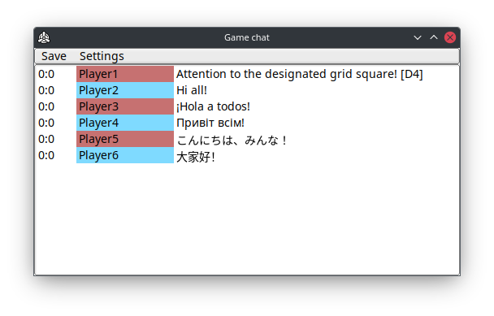
Battle Log
Shows recorded battle events, with ability Logging to file.
You can enable the auto-logging feature, Battle Log -> Settings -> Logging, this will automatically write into a log file for every game session.
Log files are located in the Logs folder.
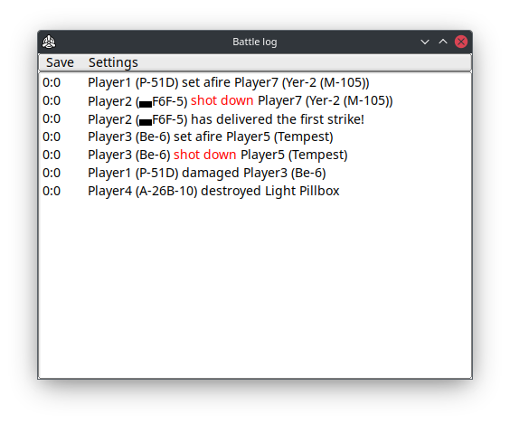
Highlights
Located at Battle Log -> Settings. Allows you to set a "keywords" to highlight certain words in battle log messages.
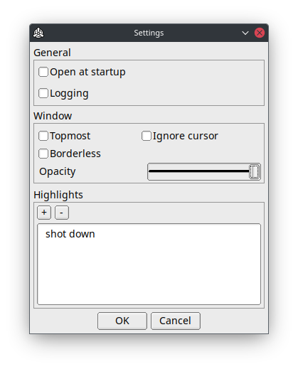
Vehicle Information
This window allows you to see some information about your current/selected vehicle.
Warning
Please do not use it for bug reports!
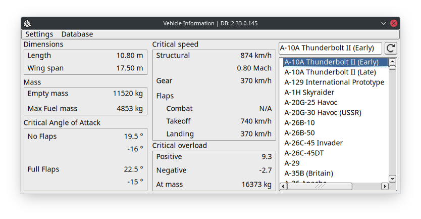
You can also see this information in the overlay.
All you need is to set up a hotkey at:
Settings -> Hotkeys tab -> Vehicle Information -> Show in OSD
VR
Setup
- Start SteamVR.
- Ensure the Current OpenXR Runtime is SteamVR.
- Start WTRTI and enable VR mode (Settings -> Advanced tab).
- Go to the "Test Flight".
- Resize the "WTRTI OSD" window to make indicators visible.
- Enable "HMD Tracking" with a hotkey (CTRL + ALT + V) or in the app VR Settings -> Tracked device.
- Attach the overlay in space using hotkey CTRL + ALT + S.
Tip
Click on the VR button in the main window to display the VR Settings.
Tip
More features in the PRO version
Warning
If you have an iGPU, make sure you are using WTRTI on the discrete GPU (High performance):
Windows Settings -> System -> Display -> Graphics Settings -> Choose WTRTI -> Options -> High performance.
Hotkeys
- CTRL + ALT + V - toggles "HMD tracking" mode.
- CTRL + ALT + Z - toggles "Left controller tracking" mode.
- CTRL + ALT + X - toggles "Right controller tracking" mode.
- CTRL + ALT + S - attaches the overlay in space ("None" tracking mode).
- SHIFT + ALT + R - resets the overlay position and rotation(x:0.0, y:0.0, z:-0.5).
- SHIFT + ALT + LEFT/RIGHT - moves the overlay along the X axis.
- SHIFT + ALT + UP/DOWN - moves the overlay along the Y axis.
- SHIFT + ALT + PAGE UP/PAGE DOWN - moves the overlay along the Z axis.
- SHIFT + ALT + Q - reduce overlay size.
- SHIFT + ALT + E - increase overlay size.
SteamVR Controller Bindings support
Allows you to assign VR controller buttons to specific WTRTI actions.
To make the settings available in SteamVR, you first need to go to "Test Flight" and then select WTRTI from the list of programs in the SteamVR Controller Bindings window.
Meta/Oculus headsets
Make sure that the Current OpenXR Runtime is SteamVR.
It's also recommended to use Steam Link or ALVR for streaming instead of Meta Quest Link.
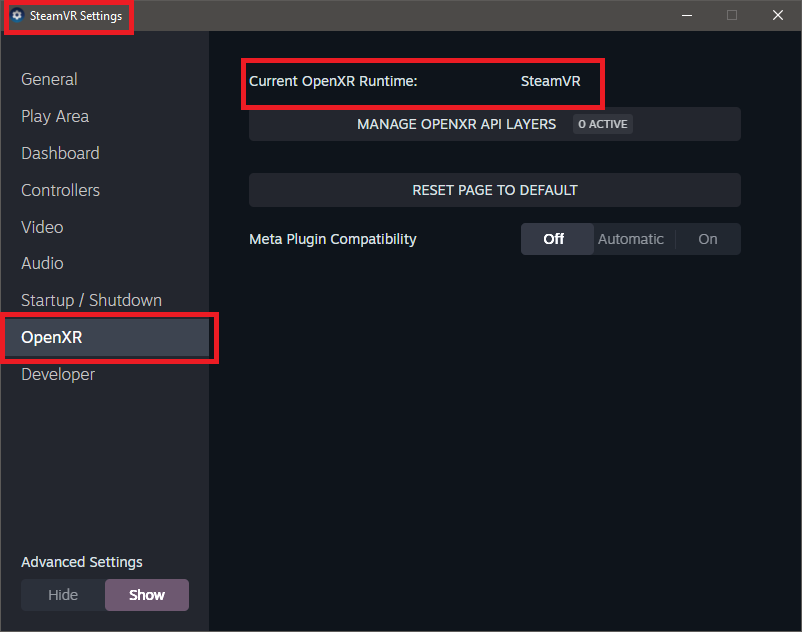
Virtual Desktop users
Select "SteamVR" as the OpenXR Runtime (Options tab).
Meta/Oculus headsets (Legacy)
To make the game run through SteamVR, you have to set the compatibility mode to Windows 7, for aces.exe in win32 and win64 folders.
How-To:
In the game root folder, open win32 folder and find aces.exe, open its Properties and set Compatibility mode to Windows 7:
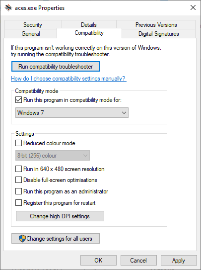
Do the same for aces.exe in the win64 folder.
It is also recommended to run the game through Steam.
Advanced
RTSS OSD Setup
- Download and Install RTSS.
- Start WTRTI.
- Settings -> OSD -> OSD Type -> RTSS 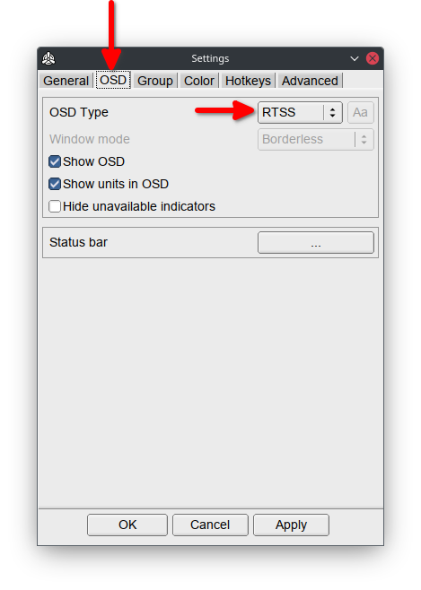
Note
By default RTSS has 2x "On-Screen Display zoom".
If you do not change it to 1x, the position of a group in WTRTI will be magnified by 2.
For example, 200,100 in config becomes 400,200 on screen.
Warning
RTSS only works with text-based indicators.
Also, RTSS only supports ASCII characters.
To change the font, see Changing the fonts.
Gamescope Setup (Linux)
There are two ways to use gamescope:
Create a script:
#!/bin/bash
export PATH=$PATH:/path/to/WTRTI
./launcher &
WTRTI
gamescope ./run.sh
From command line:
- Start the game with Gamescope:
gamescope ./launcher - Launch WTRTI from another command line:
GAMESCOPE_DISPLAY=:2 ./WTRTI
Note
GAMESCOPE_DISPLAY should be the name of the gamescope Xwayland server.
When you start the game with gamescope, you can see what name gamescope uses.
wlserver: [xwayland/server.c:108] Starting Xwayland on :2
Warning
Before closing the game, close WTRTI first and then the game!
Otherwise the app will crash and you may lose your configuration.
FM Mode
This mode contains additional indicators, that only works in "Test Flight":
- Excess power, W
- Drag, kgf (lbf)
- Total mass, kg (lb)
- No fuel mass, kg (lb)
- Thrust to Weight ratio
- Critical G, % (in-battle approximate version)
To make these indicators to work, follow these steps:
- Open the game root folder.
macOS: Go to Application folder -> RMB on WarThunderLauncher -> "Show Package Contents" -> RMB on WarThunder -> "Show Package Contents" - Open config.blk file with text editor.
- Find
debugsection - Emplace this line:
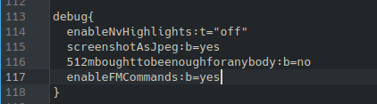
enableFMCommands:b=yes - Save the file and start the game.
- Start WTRTI and enable FM mode in Settings -> Advanced.
Custom indicators
Open Add window (+ button) -> New (or RMB on the indicators list).
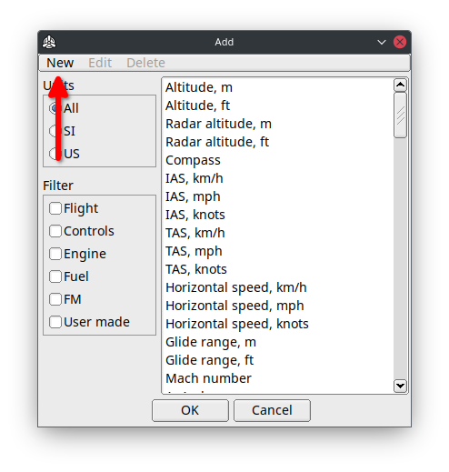
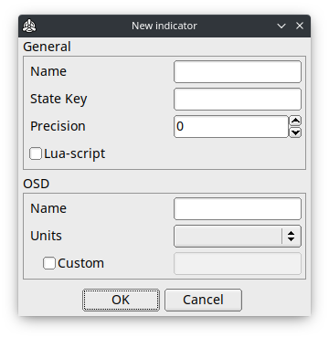
Use State window(press F2 in the main window) to see which parameters are available.
Warning
Empty State Key - switches the indicator into "label" mode, which will only show OSD name and trigger an alerts.
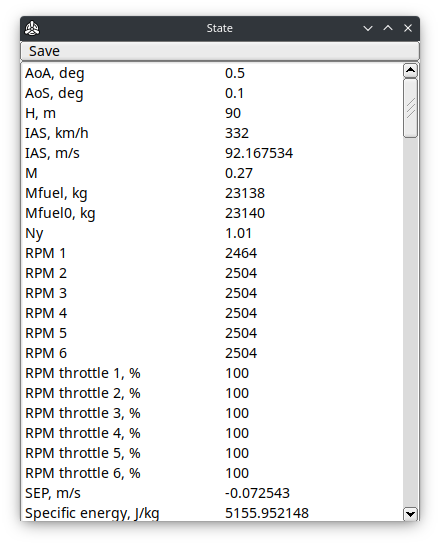
Multiple values
Replacing numbers in the State Key with %d, allows reading multiple parameters (e.g. multiple engines) with the same key.
Examples:
RPM 1 -> RPM %d
manifold_pressure1 -> manifold_pressure%d
"Lua-script" option
Allows you write a custom value processing in Lua.
Right after enabling this option and pressing OK, a template script will be created, you can find it at:
Indicators/<NAME>/update.lua
Also have a look at the Lua API to see all the functions that are available.
OSD on a second screen
Simply switch "Window mode" (Settings->OSD) to "Windowed" and move the "WTRTI OSD" window to a second screen. 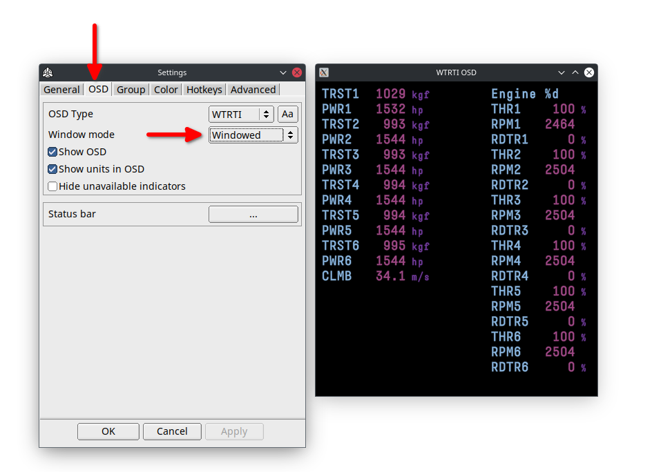
Receive data from another PC or Console on the local network
Set another PC's local IP address in Settings -> Network -> Address:
Warning
Leave 8111 port unchanged
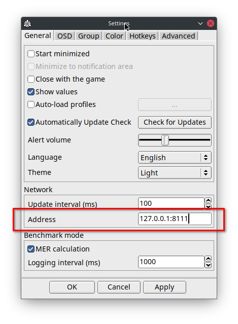
DCS World Setup
- Copy the files from DCS folder (in the app root folder) into
%USERPROFILE%\Saved Games\DCS\Scripts\
For Open Beta:
%USERPROFILE%\Saved Games\DCS.openbeta\Scripts\ - Open the Scripts folder and rename Export.lua.inc -> Export.lua
Note: If you already have Export.lua, simply copy the internals of Export.lua.inc into Export.lua.
- Start WTRTI, open Settings -> Advanced tab -> Enable "TCP Listener".
- Start the game.
Multiplayer
Hosted server
Check if the server has these options in the DCS World multiplayer lobby window:
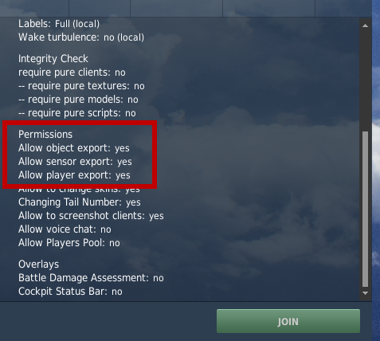
Creating a Server
Click on Advanced and enable these options:
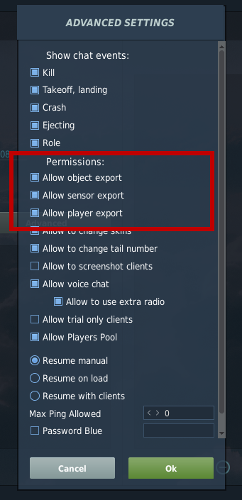
Changing the fonts
WTRTI
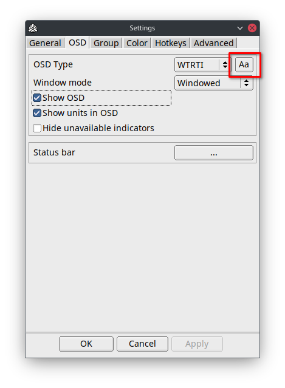 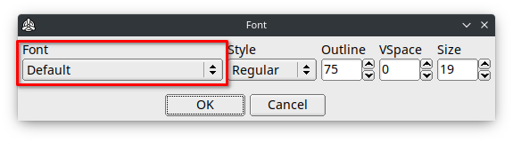
Tip
You can use a custom font file.
Simply place a TTF file into Fonts folder and select it in Settings.
RTSS
Start RTSS and click on "Raster 3D" button.
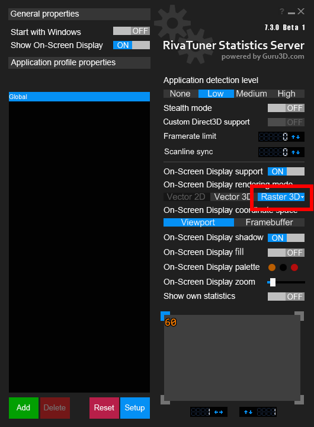
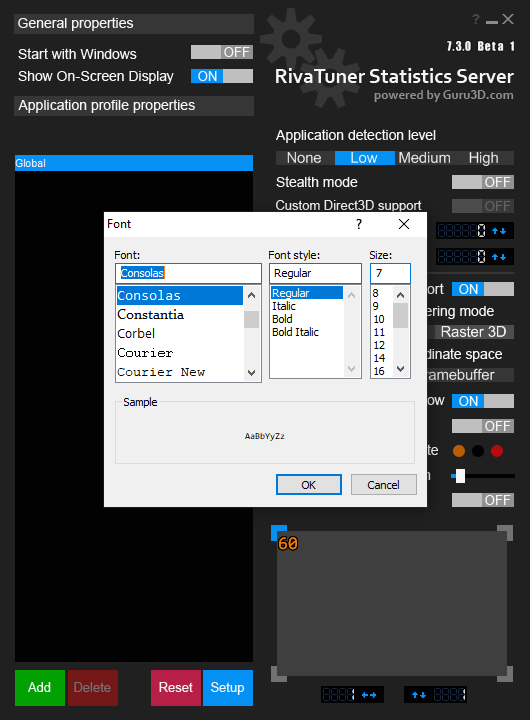
Tip
Use monospace fonts for better layout.
Tip
In order to use custom font files, you will need to install them on your system.